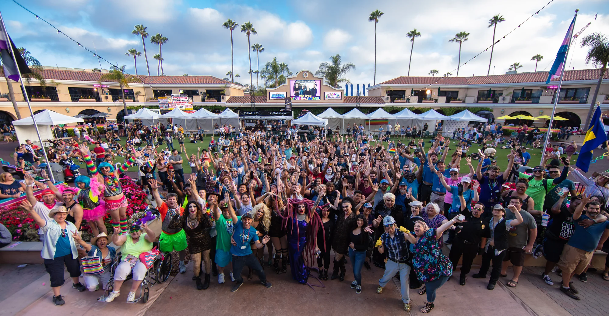
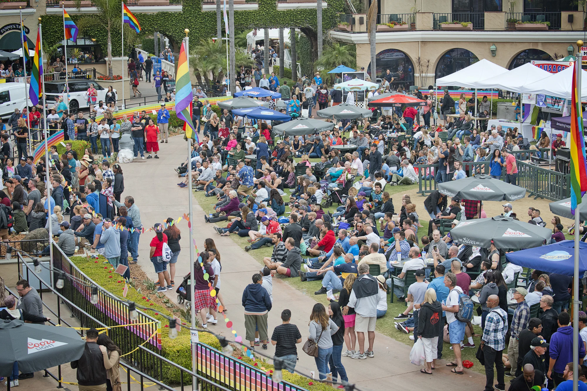
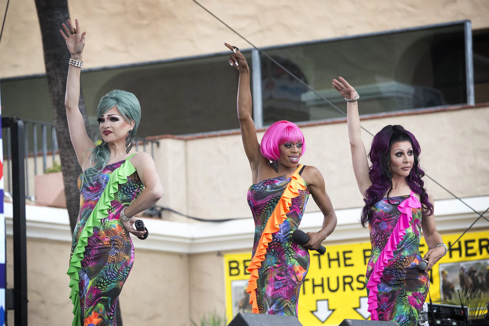
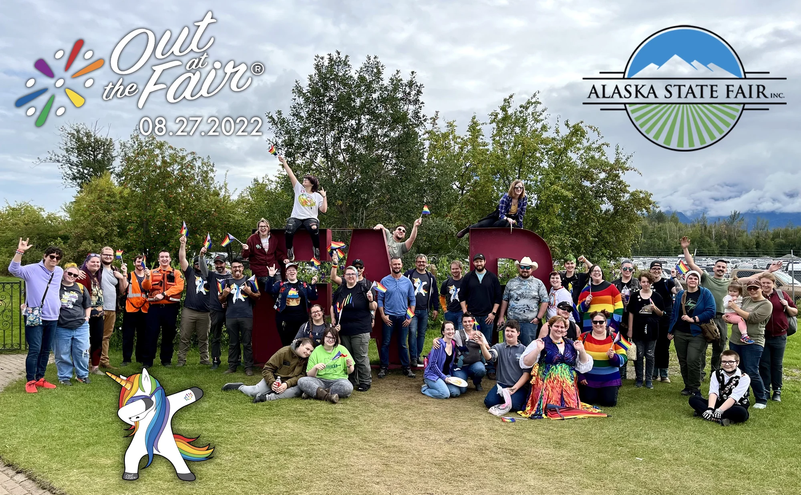
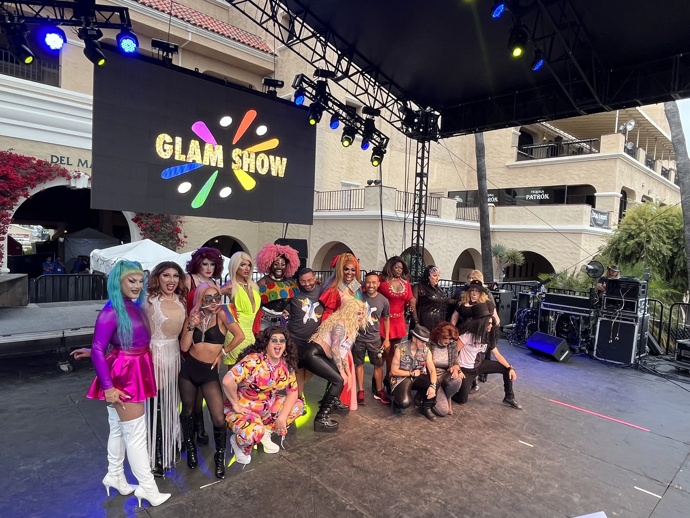
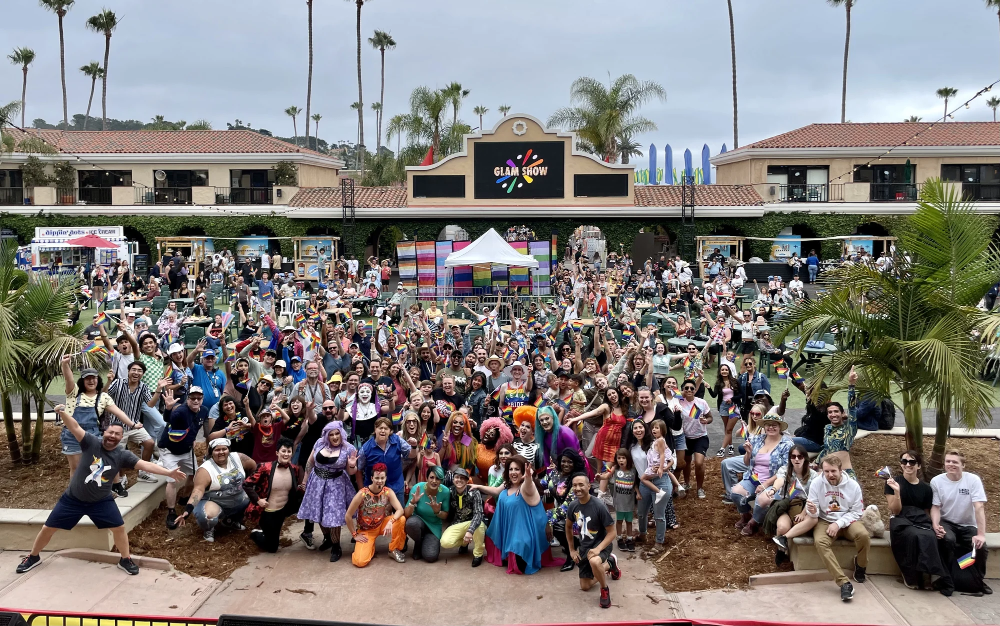
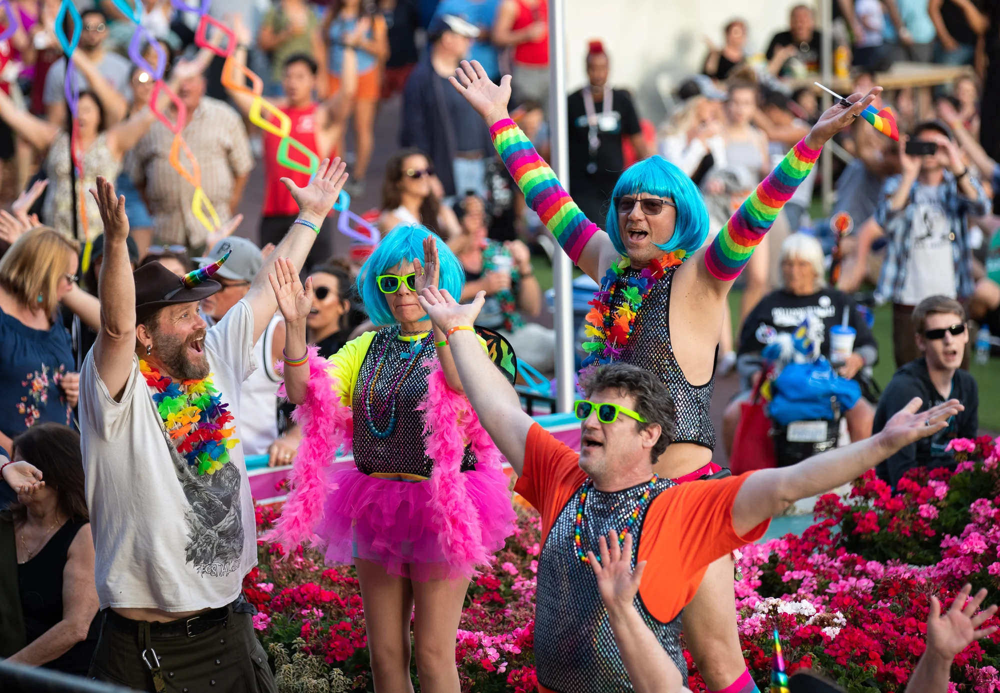
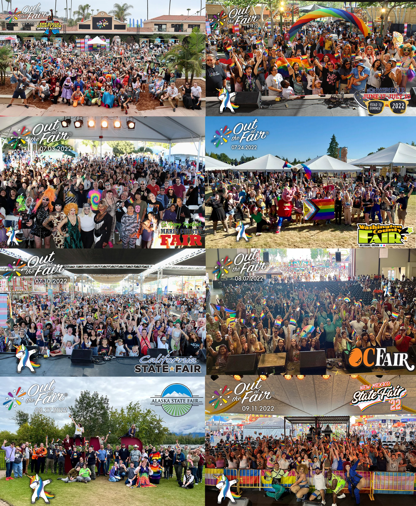
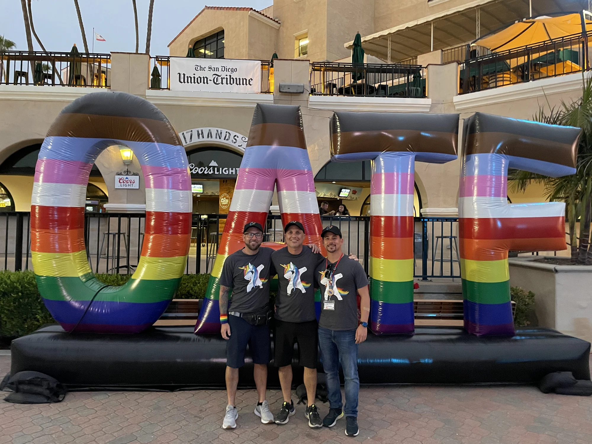

Out at the Fair
What began as a gathering became an award-winning program that brought LGBTQ+ community, entertainment and belonging into county and state fairgrounds.
More than a stage.
A community in full color.
Out at the Fair was never defined by one schedule, one performer or one location. It was built through the people who showed up, the fair partners who opened their gates and the moments when someone realized there was a place for them there.








The reach evolved.
The purpose lives on.
Out at the Fair continues with a more focused footprint, carrying forward the same commitment to LGBTQ+ visibility, community and joy at the fairgrounds. The clearest measure of its impact remains the people who found belonging in a place where it once felt unexpected.